東京大学 2020年 理科 第5問
問題
座標空間に置いて、x y平面上の原点を中心とする半径1の円を考える。この円を底面とし、点(0,0,2)を頂点とする円錐(内部を含む)をSとする。また、点A(1,0,2)を考える。
(1) 点PがSの底面を動くとき、線分APが通過する部分をTとする。平面z=1によるSの切り口および、平面z=1によるTの切り口を同一平面上に図示せよ。
(2) 点PがSを動くとき、線分APが通過する部分の体積を求めよ。
解答
(1)
点Pの座標を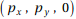、z=1におけるTの切り口上にある点の座標を(x,y,1)とする。
この2点の中点が平面z=1上にあるから、x,yの満たす関係式は
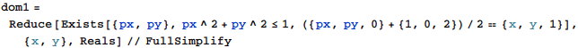
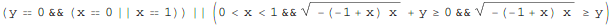
z = 1における円錐Sの切り口は、(0,0,1)を中心とする半径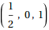の円になるから、求める領域を図示すると、下図。
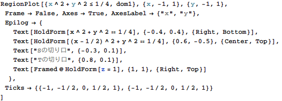
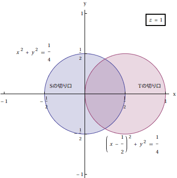
(2)
点Pの座標を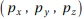とし、線分APの交点の座標を(x,y,z)とすると、
点Pと点Aをt:1-t (0≤t≤1)に内分する点(x,y,z)が存在するから、
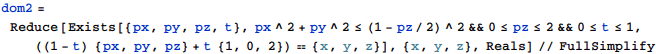
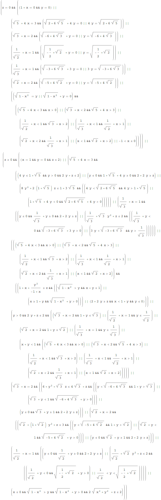
これを図示すると下図。
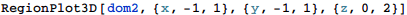
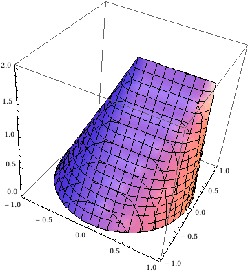
求める体積は
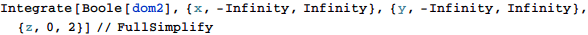
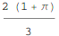
補足・感想
(1)は自分で考えたほうが速いが、(2)と同じ手順となるようにした。いずれも論理式を立てれば、あとはMathematicaが解いて、積分計算もしてくれる。